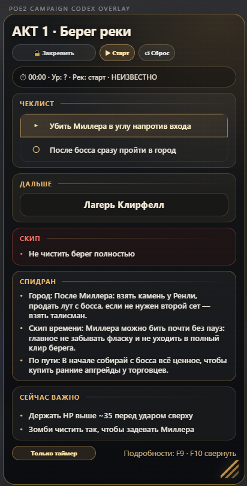

Текущая зона по логам
Оверлей читает LatestClient.txt и обновляет текущую локацию без вмешательства в клиент игры.
POE2 Campaign Codex Overlay читает лог-файл игры, определяет текущую зону и показывает памятку “Что в локации”, следующий переход, скипы, бонусы, статус уровня, таймер забега и время актов — без инжекта в клиент игры.

зачем оно нужно
Вся рутина актов собирается в один боевой HUD: что важно в зоне, что забрать, что скипнуть, куда идти дальше, когда добрать уровень и сколько времени ушло на акт.
Оверлей читает LatestClient.txt и обновляет текущую локацию без вмешательства в клиент игры.
Не трекер действий, а обычная памятка по зоне: важные награды, боссы, переходы и то, что не стоит забыть.
Отдельная вкладка с постоянными наградами: пассивки оружия, резисты, дух, здоровье, мана и выборные бонусы.
Общее время, время текущего акта, таблица времени актов, итоги забега и режим “Только таймер” для опытных игроков.
Статус уровня подсвечивается прямо в строке таймера: низкий уровень, ок или неизвестно. Плюс ближайшие важные уровни и power spikes.
Городские планы, “если по пути”, навигация, скипы лишней зачистки и короткие заметки для быстрого прохождения.
Отдельное окно с маршрутом, бонусами, таймером, временем актов, напоминаниями и итогами забега.
Приложение проверяет GitHub Releases, скачивает обновление внутри приложения и ставит его только после подтверждения.
как выглядит
Актуальный вид основного оверлея, подробной панели, бонусов актов, режима “Только таймер” и компактного режима в текущей beta-версии.
Текущая зона, памятка “Что в локации”, следующий переход, скипы, важные подсказки и статус уровня прямо поверх игры.
beta build
Все сборки теперь публикуются на GitHub Releases. Скачивай верхний релиз с пометкой Latest — там лежит актуальный установщик и история изменений.
После установки выбери лог-файл игры в настройках. Дальше приложение само проверит новые версии и предложит обновиться через GitHub Releases.
обновления
Приложение само проверяет наличие обновлений. Если новая версия доступна, оно покажет окно, скачает обновление внутри приложения и предложит установить его только после подтверждения.
При запуске и вручную из настроек приложение проверяет последний релиз на GitHub.
Обновление скачивается внутри приложения. Прогресс отображается в окне обновления и настройках.
Ничего не ставится молча: установка начинается только после кнопки “Установить и перезапустить”.
установка
Открой GitHub Releases и скачай установщик из последнего релиза с пометкой Latest.
PoE2-Campaign-Codex-Overlay-Setup-*.exeОткрой скачанный файл и пройди обычную установку в Windows.
После первого запуска открой настройки и укажи путь к игровому логу.
Path of Exile 2/logs/LatestClient.txtОверлей начнёт обновляться по логам и сразу покажет нужный контекст по текущей зоне.
важно
Приложение не связано с Grinding Gear Games, не использует память игры, не инжектится в клиент, не нажимает кнопки за игрока, не скринит экран и не использует OCR. Оно читает обычный лог-файл клиента и показывает подсказки поверх экрана.
поддержка
Доступ к beta не планируется закрывать за донатом. Поддержка — это просто “спасибо” за время, нервы, правки под русский клиент и вечную борьбу с Electron.
Альфа-Банк
Сканируй QR-код в приложении банка и отправляй любую комфортную сумму. Это не покупка доступа, не подписка и не обязательный платёж — просто способ поддержать развитие проекта.
Отсканируй QR-код в приложении банка — реквизиты подтянутся автоматически. Любая сумма добровольная.